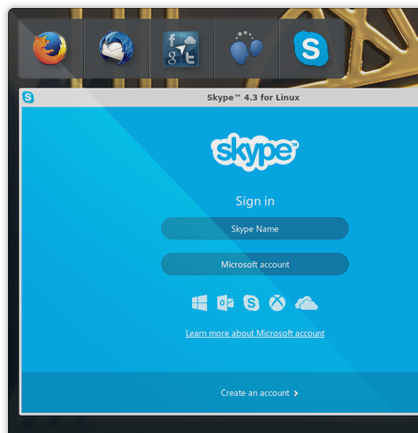

<div class="header"><h1 class="title">Get Connected</h1></div>


<div class="main">

<div class="content">
	<ul>
	    <li>Netrunner ships with many different software for a great web-experience:</li>
	    <li>Browse the web with Firefox KDE and send emails with Thunderbird.</li>
	    <li>Use Web-Accounts to connect to your friends and chat with them via Telepathy or Skype.</li>
	</ul>
</div>

</div>

